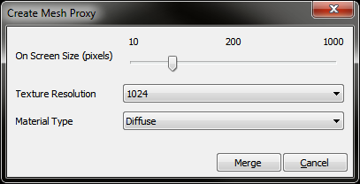
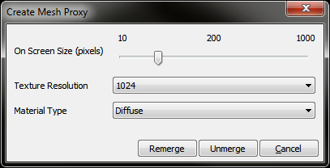
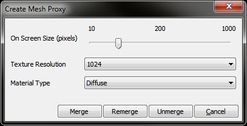
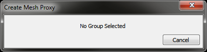

UDN
Search public documentation:
MeshProxyTool
日本語訳
中国翻译
한국어
Interested in the Unreal Engine?
Visit the Unreal Technology site.
Looking for jobs and company info?
Check out the Epic games site.
Questions about support via UDN?
Contact the UDN Staff
中国翻译
한국어
Interested in the Unreal Engine?
Visit the Unreal Technology site.
Looking for jobs and company info?
Check out the Epic games site.
Questions about support via UDN?
Contact the UDN Staff
UE3 Home > Unreal Editor and Tools > Creating A Mesh Proxy
UE3 Home > StaticMeshes > Creating A Mesh Proxy
UE3 Home > Level Editing > Creating A Mesh Proxy
UE3 Home > Level Designer > Creating A Mesh Proxy
UE3 Home > StaticMeshes > Creating A Mesh Proxy
UE3 Home > Level Editing > Creating A Mesh Proxy
UE3 Home > Level Designer > Creating A Mesh Proxy
Creating A Mesh Proxy
Overview
Mesh Proxy
Mesh Proxy Dialog
- Group selection that doesn't contain a proxy
- On Screen Size (pixels) - The on-screen size in pixels at which the mesh will be viewed.
- Texture Resolution - The size of the texture to use for the mesh proxy.
- Material Type - What type of material to generate for the mesh proxy. Currently supported types are 'Diffuse' or 'Diffuse and Normal'
- Merge - Takes all the static meshes in the group and merges them into a mesh proxy, using the settings above (replaces the existing proxy)
- Group selection that contains a proxy
- Remerge - Remerges all previously merged static meshes (replaces the existing proxy), necessary if one of the component meshes, which made up the proxy, changes or you want to change the settings it was constructed with. The user is prompted with the original settings selection if available.
- Unmerge - Reverts the proxy back to it's original state, restores original component meshes
- Group selection that contains a proxy and newly added static meshes

Options behave as above. - Unvalid selection (for example)

If it's not possible to perform a merge/remerge/unmerge opertation on the current selection, the dialog will disable and change to display the reason as to why.
Note - The dialog automatically updates whenever the current selection changes.
Examples
Limitations
- Proxies have to exist as part of a group, it's possible to move a proxied group to another level, but you can't just move the proxy itself (by unlocking the group), the group as a whole must be moved. This action unmerges the proxy, moves the group to their new level, then remerges the proxy with the settings it was originally merged with - if any of the original mesh components have been updated by this point, and the proxy not, the proxy will be merged based on the new meshes.
- Additionally, you can ungroup a proxied group and you will be prompted whether or not you wish to revert the proxy back to it's component meshes or not. Saying no is permitted at this time and keeps the merged mesh, but it is no longer a proxy as it cannot be reverted back to it's original state.
- It's also currently possible to place additional copies of the merged mesh down in the level, by creating a static mesh actor from the same base static mesh asset that the proxy has, but these aren't unmergable either - to clarify, the ability to merge/remerge/unmerge a merged mesh is only permitted on the proxy which was first created from it - therefore remerging the proxy doesn't replace other instances of the merge mesh within the level, it's a new mesh that's generated.
- Should a user load a map which does not permit the use of mesh proxies, they will be reverted back to their original components upon load.